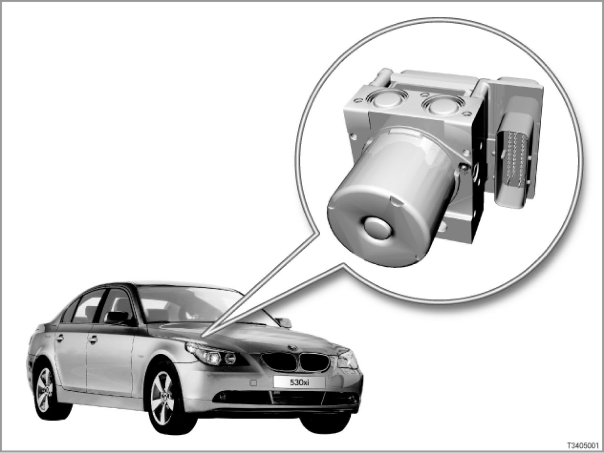

Part 1
34 01 05 (126)
Dynamic Stability Control 8Plus
E60, E61, E63, E64, E83, E90, E91, E92

Note: Vehicles with DSC 8Plus:
This SBT describes DSC 8Plus, which is installed on the following model series:
> E60, E61, E63, E64 (rear and all-wheel drive)
> E83
> E90, E91, E92 (all-wheel drive only)
Introduction
The xDrive all-wheel drive system was introduced on the BMW 5-Series in 03/05. From this time on, these vehicles are equipped as standard with Dynamic Stability Control (DSC) 8Plus.
DSC 8Plus is an advanced development of DSC 8.
The DSC unit (comprising DSC control unit and hydraulic unit) is even more powerful.
The newly developed switchover valves allow a more precise regulation, especially at low brake pressure. DSC 8Plus is supplied by Bosch.
> - E60, E61 from 03/05 up to 09/05 (all-wheel drive) [system overview ...]
> - E60, E61, E63, E64 from 09/05 (rear and all-wheel drive) [system overview ...]
> - E83 from 09/06 [system overview ...]
> - E90, E91 from 09/05 and E92 from 06/06 (all-wheel drive) [system overview ...]
> - Hydraulic circuit diagram with electrically actuated valves [system overview ...]
The principal new features of DSC 8Plus are:
- Additional functions:
- Brake Standby through precautionary pre-tensioning of the brakes in an emergency
- Brake disc drying on wet roads
- Detection of fading and increase in brake pressure during fading
- Start-off assistant
- Soft stop when braking to standstill
Note: New soft stop function not available on BMW 3-Series all-wheel drive or E83.
For technical reasons, the soft stop function has not been incorporated on BMW 3-Series all-wheel drive or on E83 vehicles.
- 2 additional brake pressure sensors, only in combination with Active Cruise Control (ACC)
New from 09/05:
> - E60, E61, E63, E64
Introduction of DSC 8Plus on the BMW 5-Series and 6-Series with rear-wheel drive.
From this point time on, the body gateway module (KGM) is the gateway to the PT-CAN.
> - E90, E91
Introduction of DSC 8Plus on the BMW 3-Series with all-wheel drive.
In these vehicles, the junction box electronics (JBE) is the gateway to the PT-CAN.
New from 06/06:
> - E92
Introduction of DSC 8Plus on BMW 3-Series Coupe with all-wheel drive.
New from 09/06:
> - E83
Introduction of DSC 8Plus on E83.
DSC is a control system that maintains dynamic stability within physical limits when the car is being driven close to the limits of performance and handling.
It also improves traction.
DSC needs the following input signals in order to discharge its control functions:
- Rate of yaw (measure of movement of the car about its vertical axis)
- Lateral acceleration
- Wheel speeds (measure of the car's roadspeed)
- Steering angle
- Brake pressure
The measured values available are used to calculate how the car is moving at any given instant. The actual condition is compared with nominal values (values in stable driving conditions) that are calculated in the DSC control unit. If the actual condition differs from the nominal values, DSC is activated and initiates brake actions and/or engine control functions.
The advantages:
The intervention of DSC in the engine control and brakes provides outstanding driving stability and traction in all driving situations.
DSC combats negative, dynamic driving forces. This means DSC brings about maximum active safety within the physical limits. DSC thus enhances driving comfort by allowing more relaxed driving.
Brief description of components
The following components are described for the Dynamic Stability Control (DSC):
- DSC unit
The DSC unit consists of the components DSC control unit and hydraulic unit.
The DSC control unit regulates the pressure in the brake system via the hydraulic unit (comprises valve block and pump motor).
- Brake light switch
The brake light switch tells the DSC when the brake pedal has been pressed.
- 4 wheel-speed sensors
The active wheel-speed sensors register the speed of an individual wheel at their circumference. Moreover, the wheel-speed sensors also recognize the direction of rotation (forwards or backwards).
When a wheel is stationary, the wheel-speed sensor emits a pulse every 0.75 seconds.
- DSC sensor
The DSC sensor measures:
- Vehicle rotation around the vertical axis (yaw rate)
- Lateral acceleration of vehicle
- Longitudinal acceleration of vehicle
> E60, E61, E63, E64
The DSC sensor is linked to the DSC control unit by the F-CAN (chassis CAN).
The DSC sensor is secured to the floor assembly under the front-passenger seat.
> E83
The DSC sensor is connected to the DSC control unit via the PT-CAN (powertrain CAN).
The DSC sensor is secured to the retainer plate for the parking brake lever.
> E90, E91, E92
The DSC sensor is linked to the DSC control unit by the F-CAN (chassis CAN).
The DSC sensor is located on the seat cross member under the driver's seat.
- Steering-angle sensor
The steering-angle sensor registers the movements of the steering wheel.
> E60, E61, E63, E64
The steering-angle sensor is part of the steering column switch cluster (SZL).
The steering column switch cluster is connected to the F-CAN (chassis CAN) and to the PT-CAN (powertrain CAN).
> E90, E91, E92
The steering-angle sensor is part of the steering column switch cluster (SZL).
The steering column switch cluster is connected to the F-CAN (chassis CAN).
> E83
The steering-angle sensor is fitted to the steering spindle. The steering angle sensor is connected to the PT-CAN (powertrain CAN).
- Internal brake pressure sensor
The DSC unit incorporates a brake-pressure sensor. This brake pressure sensor registers the braking pressure applied by the brake pedal and the brake booster.
- 2 brake pad wear sensors
The brake pad wear sensors (front left and rear right in the inner brake pads) provide additional information about the thickness of the brake pads. This additional information (2 reference points) is compared to the value calculated by the DSC.
A critical brake lining thickness will be indicated in the instrument cluster by the "Next Service" indicator (Condition Based Service, CBS) and by the general brake warning lamp lighting up red.
- DTC button
The DTC button has the letters "DTC". The DTC button can be used to select 3 switch states:
- DTC button not pressed after terminal change: DSC in operation (default)
- DTC button briefly pressed: DTC in operation (DTC indicator light lights up in instrument cluster)
- DTC button pressed and held: DSC and ASC deactivated, ABS and ABD-X on all wheel drive vehicles remain active (indicator lamp in instrument cluster lights up permanently)
> E60, E61, E63, E64
The DTC button is in the center console switch cluster (SZM) The signal is transmitted on the K-CAN and via a separate wire. The signal on the separate wire is decisive.
> E83
The DTC button is in the center console switch cluster (SZM) The signal is transmitted via a separate wire.
> E90, E91, E92
The DTC button is connected to the junction box electronics (JBE). The JBE transmits a bus signal.
- Brake-fluid-level switch
Insufficient brake fluid is detected and a signal sent to the DSC control unit.
If there is insufficient brake fluid, this will be indicated in the instrument cluster by the general brake warning lamp lighting up red.
The DSC control unit also communicates with the following control units:
- DME or DDE: Digital engine electronics or digital diesel electronics
The DME or DDE, as applicable, controls engine adaptation (for example, reduction in engine output to prevent spin at the driven wheels). The DME or DDE also receives the converted wheel speed signal from the rear right wheel. This signal is used to check the plausibility of engine misfires (DME). The signal on the PT-CAN is redundant.
- RLS: Rain-light sensor
The signal from the rain-light sensor is used to brake the brake discs dry on a wet road surface. In addition, it is important for a wiper stage to be switched on.
> E60, E61, E63, E64
The rain-light sensor supplies the signal on the CAN bus.
> E83
The rain-light sensor supplies the signal on the K-bus.
> E90, E91, E92
The rain-light sensor is connected to the roof control panel (FZD) via the LIN bus.
- CAS and M-ASK/CCC: Car Access System and multi-audio system controller/Car Communication Computer
The CAS control unit and M-ASK/CCC receive the converted wheel speed signal from the rear left wheel.
Both these control units use this signal to ascertain whether the car is moving or at a standstill.
- SGM: Safety and gateway module
> E60, E61, E63, E64 up to 09/05
The SGM is the data interface (= gateway) between:
- PT-CAN
- K-CAN
- Byteflight
- Diagnosis wire to diagnosis socket
- KGM: Body gateway module
> E60, E61, E63, E64 from 09/05
The vehicle electrical system was changed from 09/05. As a result of the change, several control units were discontinued and some control unit functions were integrated into new control units.
The new body gateway module supersedes the safety and gateway module (SGM) previously fitted.
The KGM is the data interface (= gateway) between:
- PT-CAN
- K-CAN
- Diagnosis wire to diagnosis socket
- JBE: Junction box electronics
> E90, E91 from 09/05 and
> E92 from 06/06
The JBE is the data interface (= gateway) between:
- PT-CAN
- K-CAN
- Diagnosis wire to diagnosis socket
Signals from the chassis CAN (F-CAN) are simply looped through.
- ACC: Active Cruise Control
DSC receives requests from Active Cruise Control (ACC) via the PT-CAN. In response, DSC reduces speed by applying the brakes at all four wheels.
> - E60, E61, E63, E64
[for further information, please refer to SI Technology (SBT) 66 01 04 067]
> - E90, E91 from 09/05 and
E92 from 06/06
The request for brake application is given by the LDM control unit (LDM: longitudinal dynamics management).
[for further information, please refer to SI Technology (SBT) 66 03 04 086]
- LM: Light module
> E60, E61, E63, E64
As required by law, the brake lights are activated in the event of automatic braking when the Electronically Controlled Deceleration function (ECD) is triggered by the ACC.
To do this, a signal must be sent from the DSC to the light module (LM) via the K-CAN.
- FRM: Footwell module
> E90, E91, E92
As required by law, the brake lights are activated in the event of automatic braking when the Electronically Controlled Deceleration function (ECD) is triggered by the ACC.
To do this, a signal must be sent from the DSC to the footwell module via the PT-CAN.
- KOMBI: Instrument cluster
The DSC control unit actuates the indicator and warning lights for the individual DSC functions via the instrument cluster (signal via CAN bus).
> E83
The instrument cluster is the data interface (= gateway) between:
- PT-CAN
- K-bus
- EGS: Electronic gearbox control (vehicles with automatic transmission)
The transmission control (EGS) receives the wheel-speed signals via the PT-CAN.
The gearbox controller responds by adapting the gearshift characteristics for cornering and ascents. In addition, the gearshift characteristics are adapted to winter conditions (high wheel slip).
Moreover, gearshifts are suppressed during DSC control.
- CID and CON: Central Information Display and controller
The detailed texts for the Check-Control messages are shown in the Central Information Display (CID).
CID and controller are also used to initialize the Run Flat Indicator (RPA).
With xDrive an additional function can be activated to reduce speed when driving downhill: Hill descent control (HDC)
- TCU or ULF: Telephone control unit with GPS antenna
If the car is not fitted with a navigation system, the telephone control unit receives the converted wheel speed signals from the front left and right wheels.
The telephone control unit uses these signals to pinpoint the car's position by dead reckoning.
- GM: General module
> E83
The general module supplies input signals with respect to terminal control.
System functions
The dynamic stability control system (DSC) controls longitudinal and transverse dynamics by means of engine and brake system intervention.
DSC 8Plus includes the following new functions.
- Brake Standby through pre-tensioning of the brakes in an emergency
- Brake disc drying on wet roads
- Fading compensation
- Soft stop when braking to standstill (not on BMW 3-Series all-wheel drive or E83)
- Start-off assistant
DSC 8Plus includes the following familiar functions.
- ABS: Anti-lock braking system
- EBV: Electronic brake force distribution
- CBC: Cornering brake control
- DTC: Dynamic traction control
- ASC: Automatic stability control
- MSR: Engine drag torque control
- DBC: Dynamic brake control
- Trailer stabilization control
- HDC: Hill descent control
- ECD: Electronically controlled deceleration (only in conjunction with ACC)
- All-wheel control
- RPA: Run Flat Indicator
- CBS: Condition Based Service